Table of Contents
- 1. Computer Networks and the Internet
- 2. Application layer
- 3. Transport Layer
- 4. Network Layer
- 4.1. Data Plane
- 4.2. Control Plane
- 4.3. Network Services Model
- 4.4. Virtual circuit & datagram Network
- 4.5. Internet (datagram)
- 4.6. ATM (VC)
- 4.7. Router Architecture Overview
- 4.8. IP Layer Protocol
- 4.9. IP Fragmentation, Reassembly
- 4.10. IP Addressing
- 4.11. Subnets
- 4.12. How to get IP
- 4.13. NAT: Network Address Translation
- 4.14. Routing Algorithms
- 4.15. Routing in the Internet
1 Computer Networks and the Internet
1.1 Internet overview
1.1.1 Devices
- host = end system, runs apps
1.1.2 Communication Links
- fiber, copper, radio, satellite
1.1.3 Packet switches
- routers and switches
1.2 Service view of the internet
1.2.1 Provider of services to apps
- Web, VoIP, email, games, eCommerce, social net
1.2.2 Programming interface to apps
- hooks
- service options (postal)
1.3 Protocols
1.3.1 Definition
A protocol defines the format and the order of messages exchanged between two or more communicating entitites, as well as the actions taken on the transmission and/or receipt of a message or other event.
1.3.2 Required
- format
- order of messages
1.4 Network edge
1.4.1 Access networks
- Wired, wireless comms links
How does one connect an edge to a router?
- Frequency division multiplexing
- Cable network is shared
- HFC: hybrid fiber coax
- fiber homes -> ISP router
- DSL
- Ethernet
- WLAN: IEEE802.11
1.4.2 Physical media
- Guided (wires)
- Unguided (radio)
- Physical link (transmitter, {$x}, receiver)
- Bit (propagates between)
1.5 Network core
1.5.1 Interconnected routers
- mesh of interconnected routing packets transmitted at full link capacity
1.5.2 Delay, loss and throughput in Packet switched networks
- store and forward
Source Router Destination | |____________| | |_______| |_______| R_bps R_bps
L bits per packet
- End to end delay (assumes zero propagation delay) = 2L / R
1.5.3 Queuing, delay, loss

1.5.4 Sources of delay
- transmission
- nodal processing
- queuing

| traffic intensity = La/R | Avg. queuing delay |
| 1 | 0 |
| 2 | 1 |
| 4 | 2 |
| 8 | 3 |
| 16 | 4 |
| 32 | 5 |
| 64 | 6 |
| 128 | 7 |
| 256 | 8 |
| 512 | 9 |
La/R ~ 0 : avg. q delay small
La/R <= 1 : avg. q delay large
La/R > 1 : more work arriving than can be serviced average delay infinite
1.5.5 Packet loss
Buffer has finite capacity
packet → full queue = dropout
1.6 Protocol Layers

1.6.1 iso/osi Reference Model
Encapsulation
+-------------------+ A | | A +-------------------+ | M |---+ |---+ M | |-------------------| T | | T |-------------------| | H_t M |---+ |---+ H_t M | |-------------------| N | | N |-------------------| | H_n H_t M |---+ |---+ H_n H_t M | |-------------------| L | | L |-------------------| | H_l H_n H_t M |---+ |---+ H_l H_n H_t M | |-------------------| P | | P |-------------------|
Source → Switch → Router → Destination
1.7 Network Security
Internet was originally designed to be used be mutual trusting users attached to a transparent network.
1.7.1 Malware
- Virus: self-replicating infection by receiving/executing object (email attachment)
- Worm: self-replicating infection by passively receiving object that gets itself executed
- Spyware: record keystrokes, web sites visited, upload info to
Infected host can be enrolled in botnet, used for spam. DDOS attacks.
- DDOS attacks: make resources unavailable to legitimate traffic by overwhelming with bogus traffic
1.7.2 Packet "sniffing" & IP Spoofing
- Broadcast media
- Promiscuous network interface reads/records all packets passing by
- Send packet with false source address
2 Application layer
2.1 Web and HTTP
2.1.1 Client-Server Architecture

| Client | Server |
|---|---|
| Communicates with server | Always on host |
| May be intermittently connected | Permanent IP |
| May have dynamic IP | Data centers for scaling |
| Do not communicate directly with each other |
2.1.2 Process Communicating
Client process initiates comms, server process waits for contact
2.1.3 Process
- Running within a host
- Withing same host, two processes communicating using inter-process communication (defined by OS)
- Processes in different hosts communicated by exchanging messages
2.1.4 Sockets
V ^
+---v-----+ +---^-----+
|_V_V_V_V_| |_V_V_V_V_|
Addressing Processes
- to receive messages, process must have ID
- IP = 32 bit
- identified = IP + Port
- HTTP server: 80
- Mail server: 25
Application Layer Protocol
Defines:
- types of messages exchanged (eg: request, response)
- msg syntax (fields and delineation)
- msg semantics
2.1.5 Protocols
Open protocols:
- defined in RFC
- allows for interoperability
- eg: http, smtp
Proprietary protocols:
- eg. Skype
Transport service for an app
- 100% reliable?
- can tolerate loss
- low latency
- multimedia, minimum throughput
- "elastic apps" whatever throughput
- encryption data integration
Different apps need different architecture to accommodate all user requirements
TCP (Transmission Control Protocol)
- Reliable transport send → receive
- Flow control (doesn't overwhelm receiver)
- Congestion control (throttle sender when network overloaded)
- Does not provide: timing, minimum throughput guarantee
- Connection oriented: setup required between client & server process
UDP (User datagram Protocol)
- unreliable data transfer between sending and receiving
- does not provide: reliability, flow control, congestion control, timing, throughput guarantee, security, or connection setup
| App | App layer protocol | underlying transport protocol |
|---|---|---|
| SMTP [RFC 2821] | TCP | |
| remote terminal access | Telnet [RFC 854] | TCP |
| web | HTTP [RFC 2616] | TCP |
| file transfer | FTP [RFC 959] | TCP |
| streaming | http [rtp 1889] | TCP or UDP |
| VoIP | SIP, RTP, proprietary | TCP or UDP |
2.1.6 HTTP
HTTP is a stateless protocol, server maintains no info about previous client requests uses TCP
- client initiates
- server accepts
- http messages (application-layer protocol messages) exchanged between browser (http client) and web server (http server)
- TCP connection closed
non-persistent
- At most one object sent over TCP connection
- connection then closed
- downloading multiple objects required multiple connections
persistent
- multiple objects can be sent over single TCP connection between client, server


2.1.7 User-server state: Cookies
Four components:
- Cookie header line of http response message
- cookie header line in next http request message
- cookie file kept on user's host, managed by browser
- back-end database at website
uses
- authentication
- shop cart
- recommend
- user session state (web-mail)
cookies and privacy
- permit site to learn about users
2.1.8 Web caches (proxy server)
- acts as both client and server
- typically installed by ISP (uni, company, residential)
- reduce response time
- reduce traffic on access link
2.1.9 conditional GET
- goal: don't send object if cache has up to date cached version
- cache: specify date of cached copy in http request
- server: response contains no object if cached copy up to date
2.2 FTP
File Transfer Protocol
- to/from remote host
- client/server model
- initiated by client
- server: remote host
- Ftp: RFC 959
- Ftp server: port 21
2.3 Electronic mail: SMTP, POP3, IMAP
- User agent
- mail server
- SMTP
Uses TCP on port 25 Three phases:
- handshaking
- Transfer
- closure
2.3.1 POP3
- download & delete
- cannot re-read file after client change
- stateless across sessions
- download-and-keep copies and different clients
2.3.2 IMAP
- keeps messages in one place:server
- allows user to organize messages in folders
- keeps user state across sessions:
- names of folders and mappings between message IDs and folder name
2.4 DNS
Domain Name System
- Names map IP to readable format
- Distributed database implemented in hierarchy of many name servers
- application-layer protocol: hosts, name servers communicate to
resolve names (address/name translation)
- Note: core Internet function implemented as application-layer protocol complexity at network's edge
- Root DNS Servers over 400 worldwide (2016 numbers)
- Top-level domain (TLD) servers for each of {com, org, ned, edu, gov, ie, at, jp, etc) there is a server or server cluster
- Authoritative DNS servers publicly accessible records that map the names of the host companies to IP addresses
2.4.1 DNS Services
- Host-name to IP address translation
- host aliasing
- canonical alias names
- mail server aliasing
- load distribution
- replicated web servers: many IP addresses correspond to one name
Why not centralize DNS?
- single point of failure
- traffic volume
- distant centralized database
- maintenance
- doesn't scale
2.4.2 DNS Records
DNS: distributed db storing resource records (RR)
RR Format: (name, value, type, ttl)
type=A
- name is host-name
- value is IP
type=NS
- name is domain
- value is host-name of authoritative name server for this domain
type=CNAME
- name is alias for some "canonical" real name
- www.ibm.com
- servereast.backup2.ibm.com
- value is canonical name
type=MX
- value is name of mail server associated with name
2.4.3 Attacking DNS
DDoS attacks
- Bombard servers with traffic
- Not successful to date
- traffic filtered
- local DNS servers cache IPs of TLD servers, allowing root server bypass
- Bombard TLD (top level domain) servers
- potentially more dangerous
Redirect attacks
- man in the middle attacks
- intercept queries
- DNS poisoning
- send bogus replies to DNS server, which caches
Exploit DNS for DDoS
- send queries with spoofed source address: target IP
- requires amplification
2.5 Principles of network applications
2.5.1 Server/client
- send one copy F/uS
- send N copes NF/us
Client must download file copy
- dmin = min client dl rate
- min client download time: F/dmin
Distribution time
Dc-s > mac{NF/us , F/dmin}
2.5.2 P2P
Max upload rate: us + Σ ui
distribution time (increases linearly in N):
Dp2p > max { F/us, F/dmin, NF/(us + Σ ui) }
2.6 P2P Apps
Commonly used to distribute software
Distributed hash table (DHT)
DHT: a distributed P2P database
3 Transport Layer
3.1 Transport Services & Protocols
- Provide logical communication between app processes running on different hosts
- Transport protocols run in and systems
- Send side: breaks app messages into segments, passes to network layer
- receiver side: reassemble segments into messages, passes to app layer
- More than one transport protocol available to apps
- Internet: TCP & UDP
3.2 Multiplexing and Demultiplexing
- Multiplexing at sender: handle data from multiple sockets, add transport header (later used for demultiplexing)
- Demultiplexing at receiver: use header info to deliver received segments to correct socket
3.2.1 Port
Simply a number used by a particular software to identify its data coming from the internet
3.2.2 Socket
IP Address + Port num. Used by another computer to send data to software on a particular machine
- IP = Machine
- Port = Software
\break
3.3 Demultiplexing
- Host receives IP datagrams
- Each datagram has source IP address, destination IP address
- Each datagram carries one transport-layer segment
- Host uses IP address & port numbers to direct segment to appropriate socket
<-----------32 bits---------> +-------------+-------------+ | src port # | dest port # | |_____________|_____________| | | | other header fields | |___________________________| | | | application data | | payload | |___________________________|
3.3.1 Connection-less Dmuxing
When host receives UDP segment:
- checks destination port number in segment
- directs UDP segment to socket with that port number
IP datagrams with some destination port number, but different source IP and/or source port numbers will be directed to same socket at destination.
3.3.2 Connection-oriented Dmux
TCP socket identified by 4-tuple:
- Source IP address
- Source port number
- Destination IP address
- Dest port number
Server host may support many simultaneous TCP sockets: each socket identified by its own 4-tuple.Web servers have different sockets for each connecting client, non persistent http will have different socket for each request
3.4 Connection-less Transport UDP
- No handshaking between UDP, sender, receiver
- each UDP segment handled independently of others
UDP uses:
- streaming multimedia apps (loss tolerant, rate sensitive)
- DNS
- best effort service
UDP segments may be
- lost
- delivered out-of-order to app
<-----------32 bits---------> +-------------+-------------+ | src port # | dest port # | |_____________|_____________| | length | checksum | |_____________|_____________| | | | other header fields | |___________________________| | | | application data | | payload | |___________________________|
3.4.1 Why UDP?
- No connection establishment (which can add delay)
- Simple: no connection state at sender, receiver
- Small header size
- No congestion control: UDP can blast away as fast as desired
3.5 Principles of Reliable Data Transfer

Figure 7: Reliable Data Transfer (RDT)
3.5.1 RDT: Getting Started
Relies on four functions
rdt_send() deliver_data() udt_send() rdt_rcv()
3.5.2 Dependency between event & state

Figure 8: Event -><- State dependency
3.5.3 RDT 1.0
Reliable data transfer over a reliable channel. Underlying channel is perfectly reliable
- no bit errors
- no loss of packets
Separate FSMs for sender, receiver:
- sender sends data into underlying channel
- receiver reads data from underlying channel
a. rdt1.0 sending side

b. rdt1.0: receiving side

3.5.4 RDT 2.0
Channel with bit errors: underlying channel may flip bits in packet
- checksum to detect bit
Question: How to recover from errors?
- Acknowledgements (ACKs): receiver explicitly tells sender that pkt received OK
- Negative acknowledgements (NAKs): receiver explicitly tells sender that pkt had errors
- Sender re-transmits pkt on receipt of NAK
FATAL FLAW ACK/NAK can be corrupted
- sender doesn't know what happened at receiver
- can't just re-transmit possible duplicate
Handling duplicates:
- Sender retransmits current pkt if ACK/NAK corrupted
- Sender adds sequence number to each pkt
- Receiver discards (doesn't deliver up) duplicate pkt
Stop and wait:
- sender sends one packet, then waits for receiver to respond
a. rdt2.0 sending side

a. rdt2.0 receiving side

3.5.5 RDT 2.1
Sender:
- Seq number added to pkt
- Two sequence numbers (0,1) will suffice
- Must check if ACK/NAK corrupted
- Twice as many states
- states must "remember" whether "expected" pkt should have sequence number of 0 or 1
Receiver:
- Must check if received packet is duplicate
- State indicates whether 0 or 1 expected pkt sequence number
Note: receiver can not(!) know if its last ACK/NAK received okay at sender
3.5.6 RDT 2.2: A NAK-free protocol
+Same functionality as RDT 2.1, using ACKs only
- Instead of NAK, receiver sends ACK for last pkt received OK
- receiver must explicitly include sequence number of packet being ACKed
- Duplicate ACK at sender results in same action as NAK: re-transmit current pkt
3.5.7 RDT 3.0: Channels with errors and loss
New assumption: underlying channel can also lose packets (data, ACKs)
- checksum, sequence number, ACKs, transmission will be of help … but not enough
Approach: Sender waits reasonable amount of time for ACK
- retransmits if no ACK received in this time
- if pkt (or ACK) just delayed (not lost)
- re-transmission will be duplicate, but sequence numbers already handles this
- receiver must specific sequence number of pkt being ACK
- Requires countdown timer

3.6 Pipelined Protocols

3.6.1 Got-back-N
- Sender can have up to N unacked packets in a pipeline
- Receiver only sends cumulative ack
- doesn't ack packet if there is a gap
- Sender has a timer for oldest unacked packet
- when timer expires, re-transmit all unacked packets
Packets also carry status tag, sending happens through a window
3.6.2 Selective repeat
- Sender can have up to N unacked packets in a pipeline
- Receiver sends individual ack for each packet
- Sender maintains timer for each packet
- When timer expires, re-transmit only that unacked packet
Individual acknowledgements happen on a per packet basis
3.7 TCP
3.7.1 Overview
A TCP "connection" is not an end-to-end switched circuit. It exists rather as a logical connection, where common state resides only in the TCPs in the two communicating end systems. None of the intermediate network or link layer elements retain any information about the connection and are in fact "oblivious" that even one exists. "Multicasting" is not possible as the connection needs to be point to point as a full duplex service.
- RFCs: 737, 1122, 1323, 2018, 2581
- Point to point (connection-oriented)
- one sender, one receiver
3.7.2 TCP seq Number Acks
Sequence numbers:
- byte stream "number" of first byte in segment's data
Acknowledgements:
- Seq number of next byte expected from other side
- cumulative ACK

3.7.3 Round Trip Time, Timeout
Q Set?
- longer than RTT
- RTT varies
- too short: premature timeout, unnecessary transmission
- too long: show reaction to segment loss
Estimate ?
- Sample RTT: measured time from segment transmission until ACK
receipt
- ignore transmissions
- sample RTT will vary, want RTT smoother
- average several recent measurements
Estimated RTT = ( 1 - α ) * EstmiatedRTT + α * SampleRTT
3.7.4 Re-transmission
Cumulative Acknowledgement indicates that all packets with a sequence
TCP ACK Generation
| event receiver | TCT receiver action |
|---|---|
| in order all up to | delayed ACk, wait up to 500ms for |
| expected seq # acked | for next segment, if none send ack |
| arrived in order | immediately send single |
| one other seq ack pending | cumulative ack, acking both |
| in order segs | |
| out of order GAP detected | immediately send duplicate ACK |
| with seq # of expected byte | |
| missing segment arrives | immediate ACK sent |
Fast Re-transmit
In the event of a lost segment in the course of a transfer, this can lead to a backlog of duplicate ACKs. In order to overcome this problem, if the sender receives three duplicates ACKs for a segment, it retransmits this particular segment using fast re-transmit before the segment's timer has expired.
event: ACK received, with ACK field value of y
if(y > SendBase) {
sendBase = y
if(there are currently any not yet acknowledged segments)
start timer
}
3.7.5 Flow Control
- Receiver controls sender, so sender won't overflow receiver's buffer by sending too much, too fast
- Receiver advertises window space into header of request ack
3.7.6 Connection Management
- TCP: 3 way handshakes


3.7.7 Principles of Congestion Control
otherwise known as traffic ;-)
Another cost of congestion: when packet dropped, any "upstream transmission capacity used for that packet was wasted!"
- Additive increase multiplicative decrease (AIMD)
4 Network Layer
4.1 Data Plane
- Transport segments from sending to receiving host
- On send side encapsulates segments into datagrams
- On receiving side, delivers segments to transport layer
- Router examines header Fields in all IP datagrams passing through it
4.1.1 Forwarding
- defn Move packets from routers' input to appropriate router output
- analogy planning a trip from source to destination
4.1.2 Routing
- defn determine route taken by packets from sources to destination
- analogy getting through a single intersection
4.2 Control Plane
{ routing algorithm } -> determines end to end
path through network
Control plane -> software-defined networking
..............................................
Data plane local forwarding table
_______________________________
header value | output link
--------------|--------------
0100 | 3
0101 | 2
0111 | 2
1001 | 1
4.3 Network Services Model
| Net Arch | Model | Bandwidth | Loss | Order | Timing | Congestion feeback |
|---|---|---|---|---|---|---|
| internet | best effort | none | no | no | no | no (inferred via loss) |
| ATM | CBR | const rate | yes | yes | yes | no congestion |
| ATM | VBR | const rate | yes | yes | yes | no congestion |
| ATM | ABR | grntd. min | no | yes | no | yes |
| ATM | UBR | none | no | yes | no | no |
4.3.1 Possible service provisions
- guaranteed delivery: packet sent by host will eventually arrive at destination host
- guaranteed delivery with bounded delay: e.g. within 100msec
- In-order packet delivery: guarantees that packets arrive at destination in the order that they were sent
- guaranteed
4.4 Virtual circuit & datagram Network
- Datagram network provides network-layer connectionless service
- virtual-circuit network provides network-layer connection service
- analogous to TCP/UDP connection-oriented/conectionless transport
layer services, but:
- Service: host-to-host
- No choice: network provides one or the other
- Implmentation: in network core
4.4.1 Virtual circuits
- "Source-to-destination path behaves much like telephone circuit"
- Performance-wise
- Network actions along source-to-dest path
- Call setup, teardown for each call before data can flow
- Each packet carries VC identifier (not destination host address)
- Every router on source-dest path maintains "state" for each passing connection
- Link, router resources (bandwidth, buffers) may be allocated to VC (dedicated resources = predictable results)
4.4.2 Datagram forwarding table
| local forwarding table | |
|---|---|
| header value | output lnk |
| 1 | 4 |
| 2 | 2 |
| 3 | 2 |
| 4 | 1 |
- 4 billion IP addresses so rather than list individual destination addresses, list range of addresses (aggregate table entries)
4.5 Internet (datagram)
- Data exchange amoung computers
- "Elastic" service, no strct timing requirements
- Many link types
- different characteristics
- uniform service difficult
- "Smart" end systems (computers)
- can adapt, perform control, error recovery
- simple inside network, complexity at "edge"
4.6 ATM (VC)
- Evolved from telephony
- Human conversation:
- Strict timing, reliability requirements
- Need for guaranteed service
- "Dumb" end systems
- Telephones
- Complexity inside network
4.7 Router Architecture Overview
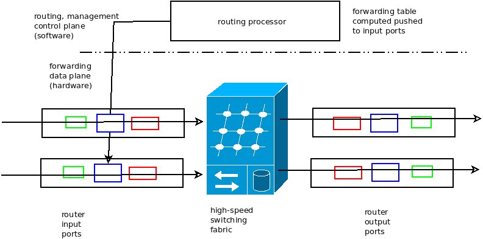
Two key functions:
- Forwarding datagrams from incoming to outgoing link
- Run routing algorithms/protocol (RIP, OSPF, BGP)
4.7.1 Input port functions
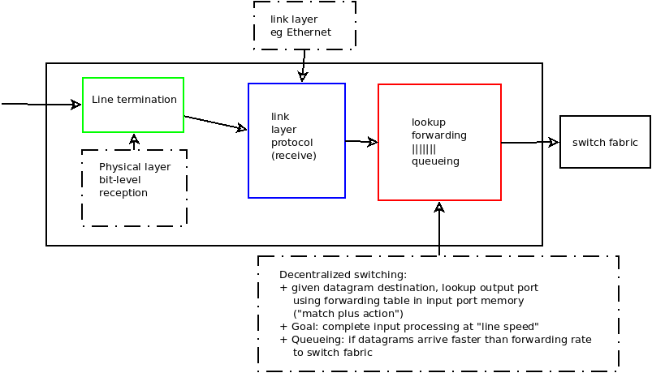
4.7.2 Head-of-the-line (HOC) blocking
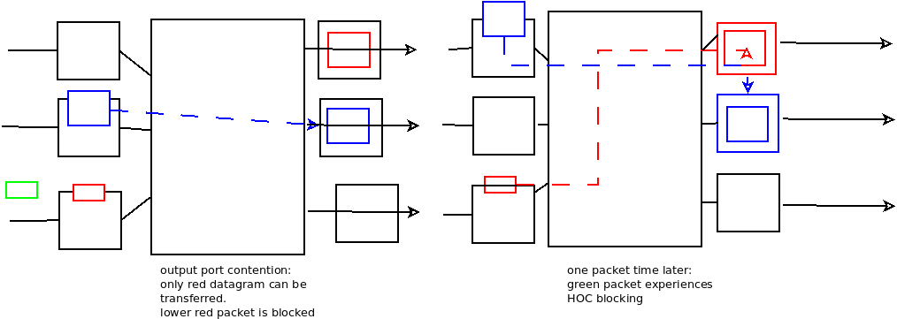
4.7.3 Switching Fabric
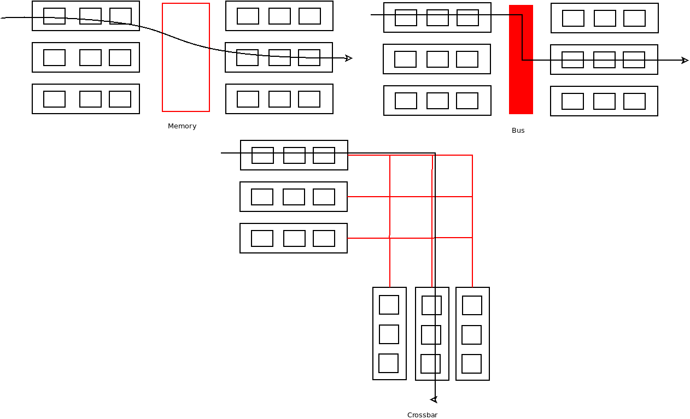
4.7.4 Output Ports
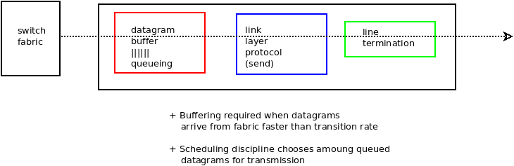
4.8 IP Layer Protocol
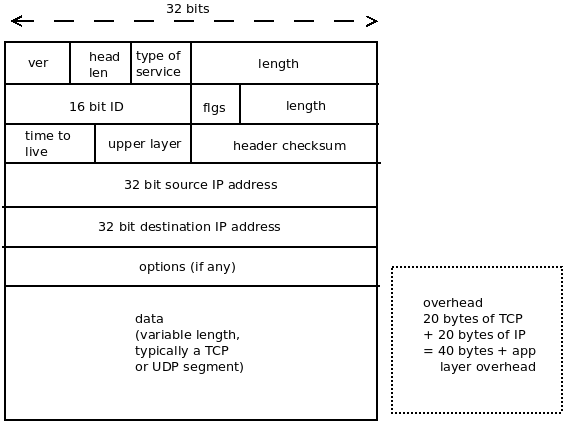
4.9 IP Fragmentation, Reassembly
Large IP datagram divided ("fragmented") within net
- One datagram decomes several datagrams
- Reassaembled only at final destination
- IP header bits used to identify, order related fragments
4.10 IP Addressing
- IP Address: 32 bit identifier for host, router interface
- Interface: connection between host/router and physical link
- Routers typcially have multiple interfaces
- host typically has one or two interfaces (e.g. wired Ethernet, wireless 802.11)
- IP address associated with each interface
4.11 Subnets
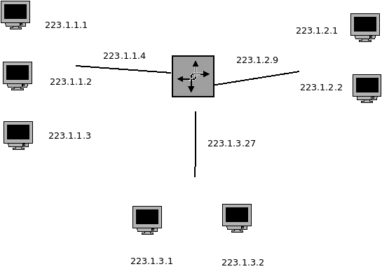
- Subnet?
- Device interfaces with same subnet port of IP address
- Can physically reach out to each other without intervening router
- IP Address
- Subnet port: high order bits
- host port: low order bits
4.11.1 Bit distribution and max num Computers
On the subnet: 23.1.1.0/24 the last 8 bits are used to ID the computer
28 = 256 0 => ID Network 255 => ID Broadcast
Max of 254 computers on a subnet
4.11.2 CIDR (RFC 1918)
Classless InterDomainRouting
- Subnet portion of address of arbitrary length
- Address format a.b.c.d/c , where x is the number of bits in subnet portion of address
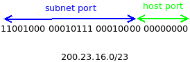
4.12 How to get IP
4.12.1 Host
- can hard code via system files
- windows: control-panel → network → configuration → tcp/ip → properties
- unix: /etc/rc.config
- Assigned by DHCP (Dynamic Host Configuration Protocol)
- "Plug & Play"
DHCP can return more than just allocated IP address on subnet:
- Address of first-hop router for client
- name and IP address of DNS server
- Network mask (indicating network versus host portion of address)
4.12.2 Network
Q. How does network get subnet part of IP address?
A. Gets allocated portion of its provider's ISP address space
Basically, the ISP's IP is chunked into a large enough block that anything being sent through the internet will be associated with a specific "IP address range", i.e. the whole 32 bits will note have to be constrantly re-read
ISP receives block from
ICANN (icann.org)
- allocated addresses
- manages DNS
- assignes domain names, resolves disputes
4.13 NAT: Network Address Translation
- Problem: not enough IP addresses
- Private internet addresses
| class | block |
|---|---|
| A | 10.0.0/8 |
| B | 172.16.0.0/12 |
| C | 192.168.0.9/16 |
Basically, a router will map a pricate IP to a public one
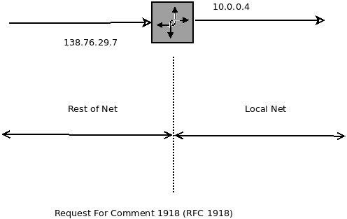
Local network uses just one IP address as far as the outside world is concerned:
- Range of addresses not needed from ISP just one IP address for all devices
- Can change addresses of devices in local network without notifying outside world
- can change ISP without changing addresses of devices in local network
- Devices inside local net not explicitly addressable, visible by outside world (a security plus)
4.14 Routing Algorithms
- Algorithm responsible for maintaining the path that the datagram travels through the network
- Forwarding takes packet coming into incoming port, processes it, does the lookup on the destination and forwards it to the router
4.14.1 Graph Abstraction
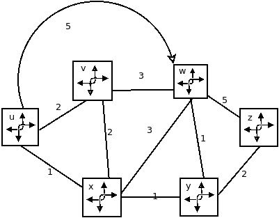
- C( x, x1 ) = const of link ( x, x1 ) e.g.: c( w, z ) = 5
- cost could always be 1, or inversely related to bandwidth, or inversely related to congestion
- Cost of path ( x1 , x2 , … , xp ) = c( x1 , x2 ) + c( x2 , x3 ) + … + c( xp-1 , xp )
- Key question: what is the least-cost path between u and z?
- Routing algorithm: algorithm that finds that least cost path
4.14.2 Routing Algorithm Classification
Global or decentralized information?
Global:
- All routers have complete topology, link cost info
- "Link state" algorithms
Decentralized
- Router knows physically-connected neighbors, link cost to neighbors
- Iterative process of computation, exchange of info with neighbors
- "Distance vector" algorithms
Q. Static or Dynamic?
Static
- Routes change slowly over time
Dynamic
- Routes change more quickly
- Periodic update in response to link cost changes
- Global
- Decentralized
- Static
- Dynamic
4.14.3 Link State: Dijkstra's Algorithm
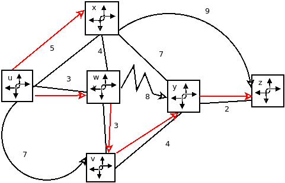
| D(v) | D(w) | D(x) | D(y) | D(z) | ||
|---|---|---|---|---|---|---|
| Step | N' | p(v) | p(w) | p(x) | p(y) | p(z) |
| 0 | u | 7,u | 3,u | 5,u | \bowtie | \bowtie |
| 1 | uw | 6,w | 5,u | 11,w | ||
| 2 | uwx | 6,w | 11,w | 14,x | ||
| 3 | uwxz | 10,v | 14,x | |||
| 4 | uwxvy | 12,y | ||||
| 5 | uwxvyz |
Notes
- Construct shortest path by tracing predecessor nodes
- Ties can exist (can be broken arbitrarily)
Resuslting shortest-path tree from u: 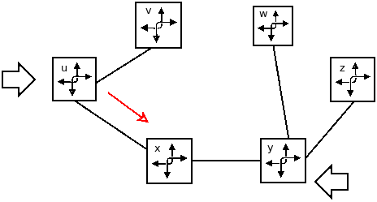
Resulting forwarding table in u:
| destination | link |
|---|---|
| v | (u.v) |
| x | (u.x) |
| y | (u.x) |
| w | (u.x) |
| z | (u.x) |
4.14.4 Bellman-Ford (Distance Vector Algorithm)
- Clearly, dv(z) = 5, dx(z) = 3, dw(z) = 3
- B-F equation says: du (z) = min { c(u, x) + dv(z), c(u, x) + dx(z), c(u,w) + dw(z) } = min { 2 + 5 , 1 + 3 , 5 + 3 } = 4
- From time-to-time, each node sends its own distance vector estimate to neighbors
- When x receives new DV estimate from neighbor, it updates its own DV using B-F equation: Dx (y) ← minv { c(x, v) + Dv(y) } for each node y Ε N
- Under minor, natural conditions, the estimate Dx(y) converge to the actual least cost dx(y)
4.14.5 Comparison of LS & DV Algorithms
Message Complexity
- LS: With n nodes, E links, O(nE) msgs sent
- DV: Exchange between neighbors only
- Convergence time varies
Robustness What happens if router malfunctions?
- LS:
- Node can advertise incorrect link cost
- Each node computes only its own table
- DV:
- DV node can advertise incorrect path cost
- Each node's table used by others error propagates through network
Domain
- DV => local networks
- LS => Global networks
Speed of convergence
- LS: O(n2) algorithm requires O(nE) msgs
- may have oscillations
- DV: convergence time varies
- may be routing loops
- count-to-infinity problem
Hierarchical Routing
- Routing study so far - idealization
- All routers identical
- Network "flat"
… Not true in practice!
Scale: with 600 million destinations:
- Can't store all destinations in routing tables
- Routing table exchange would swamp links
Administrative autonomy
- Internet = network of networkds
- Each network admin may want to control routing in its own network
4.15 Routing in the Internet
4.15.1 Autonomous systems
- Aggregate routers into regions "Autonomous Systems" (AS)
- Routers in some AS run some routing protocol
- "intra-AS" routing protocol
- Routers in different AS can be different intra-AS routing protocol
- Gateway router:
- Routers in different AS can run different intra-AS routing protocol
- Has link to router in another AS
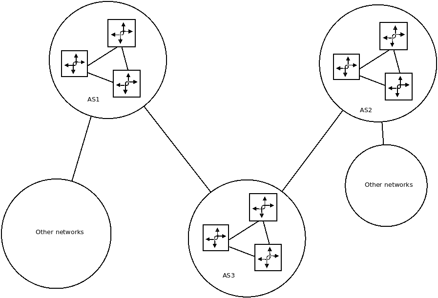
- Suppose router in AS1 receives datagram destined outside of AS1
- AS1 must:
- Learn which destinations are reachable through AS2, which through AS3
- Propagate this reachability info to all routers in AS1
4.15.2 Intra-AS routing
- Also known as interior gateway protocols (IGP)
- Most common intra-AS routing protocols:
- RIP: Routing Information Protocol
- OSPF: Open Shortest Path First
- IGRP: Interior Gateway Routing Protocol (Cisco Proprietary)
4.15.3 RIP (Routing Information Protocol)
- Included in BSD-Linux distribution in 1982
- Distance vector algorithm
- distance metric: number of hops ( max = 15 hops), each link has cost 1
- DVs exchanged with neighbors every 30 seconds in response message (aka advertisement)
- Each advertisement: lists up to 25 destination subnets (in IP addressing sense)
- If no advertisement heard after 180 seconds, neighbor link declared
dead
- Routes via neighbor invalidated
- new advertisements sent to neighbors
- neighboers in turn send out new advertisements (if tables changed)
- Link failure info quickly propagates to entire net
- Poison reverse used to precent ping-pong loops (infinite distance = 16 hops)
4.15.4 Open Shortest Path First
- "Open" source
- Uses link state algorithm
- LS packet dissemination
- Topology map at each node
- Route computation using Dijkstra's algorithm
- OSPF advertisement carries one entry per neighbor
- Advertisements flooded to entire AS
- Carried in OSPF message directly over IP (rather than TCP or UDP)
- Security: all OSPF messages authenticated (to prevent malicious intrusion)
- Multiple some-cost paths allowed (only one in RIP)
- For each link, multiple cost metrics for different ToS (e.g.: satellite link cost set "low" for best effore ToS; high for real time ToS
- Integrated uni and multicast support
- Multicast OSPF (MOSPF) uses some topology database as OSPF
- Hierarchical OSPF in large domains
4.15.5 Hierarchical OSPF
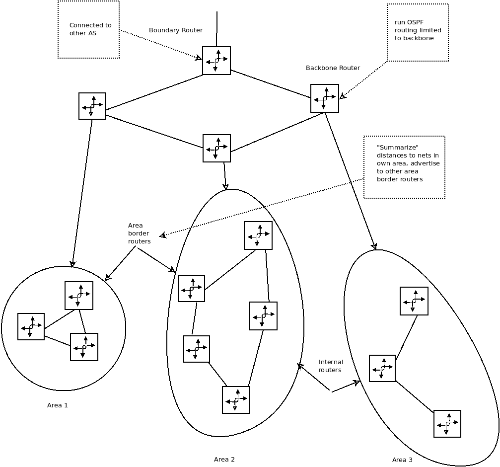
- Two-level hierarchy: local area, backbone
- Link-state advertisements only in area
- Each node has detailed area topology; only know direction (shortest path) to nets in other areas
4.15.6 Border Gateway Protocol (BGP)
- De Facto inter-domain routing protocol
- "glue that holds the internet together"
- BGP provides each AS a means to:
- eBGP: obtain subnet reachability information from neighboring ASs
- iBGP: propagate reachability information to all AS-internal routers
- Determins "good" routes to other networks based on reachability information and policy
- Allows subnet to advertise its existence to rest of internet: "I Am Here!"
4.15.7 Why different routing?
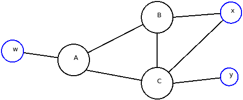
- A, B, C are provider networks
- x, w, y are customer (of provider networks)
- x is dual-homed: attached to two networks
- x does not want to route B via X to C
- … so x will not advertise to B a route to C
Policy
- Inter-AS: admin wants to control over how its traffic routed, who routes through its net
- intra-AS: single admin, so no policy decisions needed
Scale
- hierarchical routing saves table size, reduced update traffic
Performance
- intra-AS: can focus on performance
- inter-AS: policy may dominate over performance
4.15.8 Broadcast & Multitask routing
- Deliver packets from source to all other nodes
- Source duplication is ineffecient
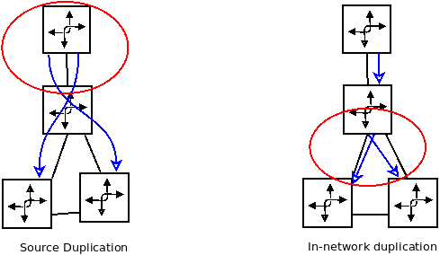
- Flooding: When node receives broadcast packet, sends copy to all
neighbors
- Problems: cycles & broadcast storm
- Controlled flooding: node only broadcasts packet if it hasn't
broadcast same packet before
- Node keeps track of packet ids already broadcasted
- Or reverse path forwarding (RPF): only forwarded packet if it arrived on shortest path between node and source
- Spanning tree:
- No redundent packets by any node
- First construct spanning tree
- Nodes then forwarded/make copies only along spanning tree
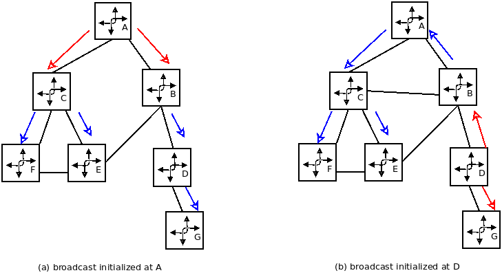
4.15.9 Multicast routing
- Delivers to multiple but not all computers in the network